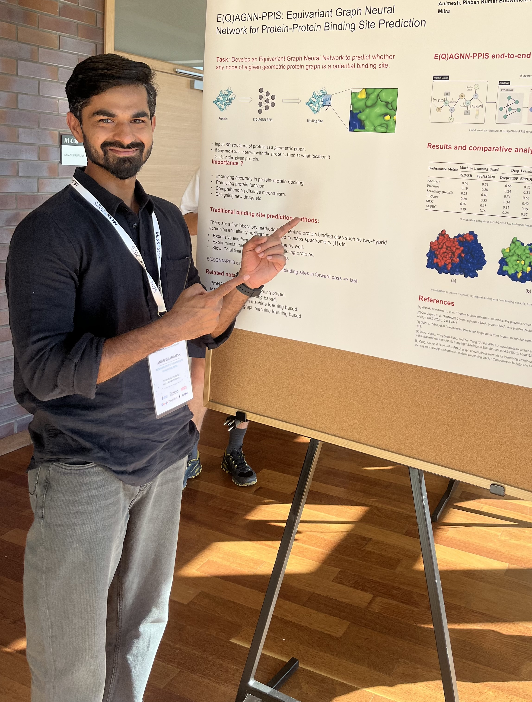

PhD Scholar · TCS Research Fellow
Animesh Sachan
Department of Artificial Intelligence,
Indian Institute of Technology, Kharagpur
Email: animesh.sachan24794@[kgpian.iitkgp.ac.in, gmail.com]
I build graph neural networks that read the 3-D structure of proteins to understand how they bind — turning nodes and edges into biological insight.

About
I am a PhD Scholar and TCS Research Fellow in the Department of Artificial Intelligence at IIT Kharagpur, advised by Prof. Plaban Kumar Bhowmick and Prof. Pralay Mitra.
Graphs — whether social networks, biological structures, or neural pathways — hold the keys to unlocking patterns that are otherwise hidden. My work uses graph machine learning to decipher the language of these connections. Concretely, my ongoing research designs graph neural network frameworks that interpret protein structures to gain a deeper understanding of their binding mechanisms.
News
Academic Service
Contact
- Office
- AI Lab, Takshashila Building (1st floor)
IIT Kharagpur, West Bengal — 721302, India